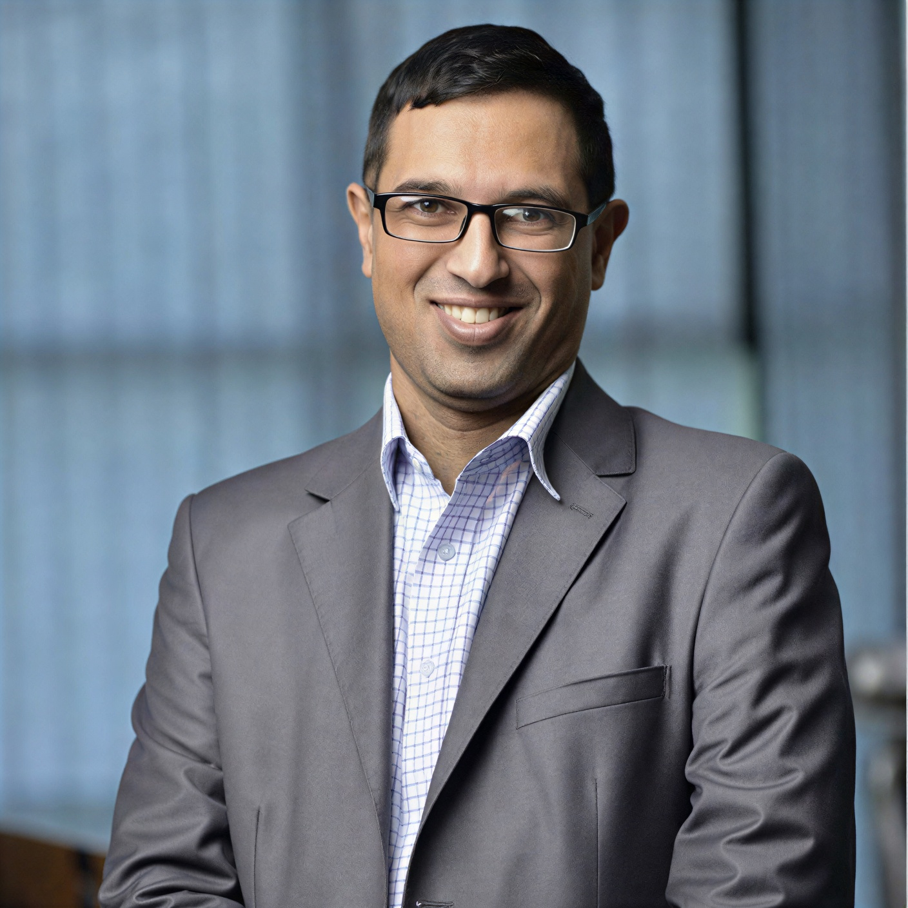

SOUTHERN AFRICA HUB
Cavendish University
Zambia.

University at a Glance
- Location: Lusaka, Zambia
- Founded: 2004
- Nationalities: 32
- Student Body: 7,300+
- Core Focus: Medicine and Health Sciences, Business, Technology, and Law
ACADEMICS
Faculties & Programs.
- Medicine & Health Sciences
- Business and IT
- Law
- Arts & Social Sciences
Medicine & Health Sciences
- Bachelor of Medicine and Bachelor of Surgery (MBChB)
- Bachelor of Science in Nursing & Midwifery
- Bachelor of Science in Public Health
- Diploma in Clinical Medicine
Business and Information Technology
- Bachelor of Science in Information Technology
- Master of Business Administration (MBA)
- Bachelor of Business Administration
- Bachelor of Science in Accounting and Finance
Arts, Education & Social Sciences
- Bachelor of Arts in Social Work
- Bachelor of Arts in Development Studies
- Bachelor of Mass Communication and Public Relations
Pioneering Access and Impact
As Zambia’s first private university, CUZ helped pioneer access to higher education and continues to broaden opportunities for learners across the country.
Academic Excellence
CUZ is recognized for academic excellence across a range of disciplines, with its School of Medicine earning a strong reputation for preparing healthcare professionals who serve communities in Zambia and beyond.
GOVERNANCE
University Leadership
Vice Chancellor
Prof. Welani Chilengwe
A seasoned academic leader and retired military officer, Prof. Chilengwe drives the delivery of market-relevant education while advancing CUZ as a premier Tier 1 institution through global partnerships.

Deputy Vice Chancellor
Mr. Oscar Correia
An expert in academic operations and digital transformation with an MBA from Warwick Business School. Mr. Correia leads the integration of innovative technology and systems into the institutional model.

Executive Director
Mr. Reginald Rainey
An executive leader with over 25 years of expertise in university operations. Mr. Rainey directs the strategic functions of CUZ, focusing on digital innovation and global partnerships to empower youth.
EAST AFRICA HUB
Cavendish University
Uganda.

University at a Glance
- Location: Kampala, Uganda
- Founded: 2008
- Nationalities: 41
- Student Body: 4,700+
- Core Focus: Law, Business, Science and Technology and Health Sciences
ACADEMICS
Faculties & Programs.
- Law
- Business & Management
- Science & Technology
- Socio-Economic Sciences
Access and Opportunity
One of the most diverse universities in the region, Cavendish University Uganda has expanded access to higher education for learners from across Africa, including refugees and students from underserved and conflict-affected communities.
Academic Excellence
CUU is recognized for academic excellence across a range of disciplines, with its School of Law earning a strong reputation for legal education and leadership in national and regional moot court competitions.
GOVERNANCE
University Leadership

Chancellor
Dr. Goodluck Jonathan
A distinguished scholar and former academic lecturer holding a PhD in Zoology. Dr. Jonathan oversees the strategic and ethical direction of CUU’s academic mission.

Vice Chancellor
Dr. Olive Sabiiti
A distinguished legal scholar and Commonwealth Scholar with a PhD from the University of Manchester. Dr. Sabiiti provides expert academic and administrative leadership to CUU.

Executive Director
Mr. David Mutabanura
An operational strategist with over 20 years of commercial experience. Mr. Mutabanura directs the financial and administrative functions of CUU with institutional rigor.